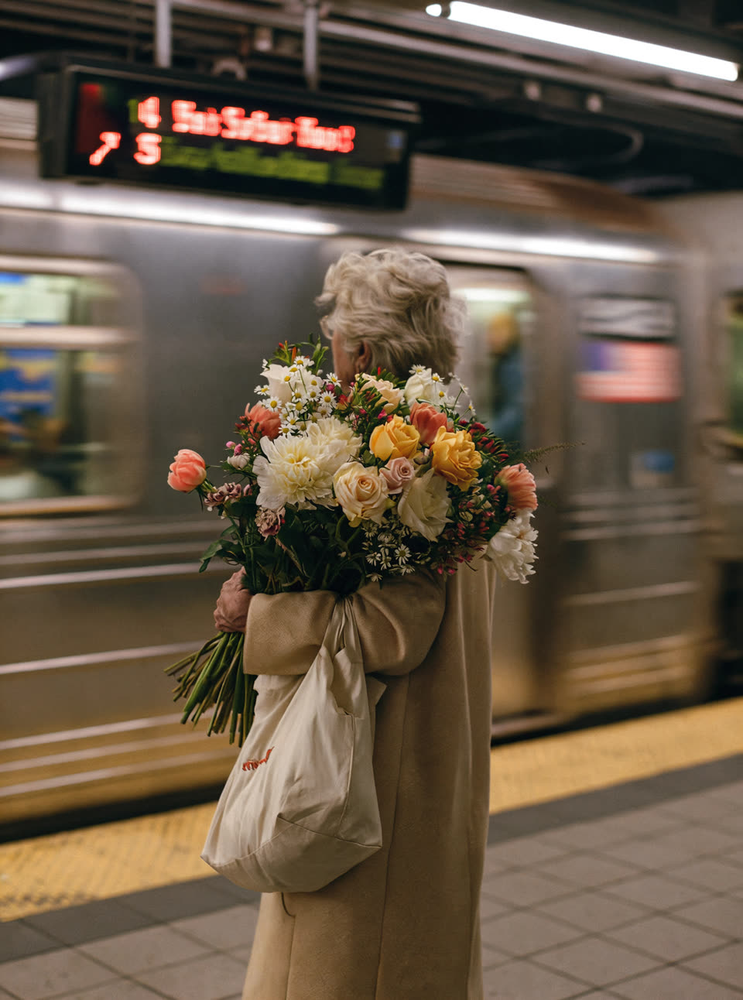

Kling Image 4.0 official documentary still: back view of an elderly commuter hugging a huge bouquet as a subway train motion-blurs past

Official "Documentary Photography" example: camera "two to three meters behind the subject, at approximately shoulder height", a bouquet that "almost completely obscures their upper body", a passing train with horizontal motion blur while person and flowers stay sharp, a red-on-black station sign that "should not become the visual focus", muted overhead light so the flowers carry the colour. Ends on a negative list ("No sunlight, romantic lens flare, empty platform, or frontal view of the subject"). Good for mood-led realism and for an image-to-video start frame where only the train moves.
Prompt
3:4 vertical composition, a realistic documentary photograph of an urban subway platform. The camera is positioned about two to three meters behind the subject, at approximately shoulder height. An elderly person with short, fluffy silver-white hair stands with their back to the camera, slightly below the center of the frame. They wear a loose, light camel-colored long coat and are turned slightly toward the left, holding a large bouquet of flowers in both arms. The bouquet spans the middle of the frame and almost completely obscures their upper body. It consists of large white flowers, cream and apricot-yellow roses, pink-orange blossoms, small white daisies, and dark green foliage. The flower stems hang down toward the lower left, and a soft off-white fabric tote bag hangs from their arm into the lower half of the frame. Behind the subject, a silver-gray subway train passes from left to right. The train windows and body show horizontal motion blur, while the person and bouquet remain sharp. In the upper left hangs an electronic station sign with red illuminated lettering on a black background. The text may be blurred and should not become the visual focus. The platform ceiling and a long white fluorescent light are visible above. Gray tiled flooring and a yellow safety line running along the platform edge appear at the bottom. The lighting is soft, slightly dim indoor overhead lighting. Colors are muted, with the flowers providing the most vivid colors in the image. No sunlight, romantic lens flare, empty platform, or frontal view of the subject.
Our Seedance 2.5 adaptation
[ADAPTED for Seedance 2.5 by Grok Bot; not the creator's prompt. Follows the official BytePlus Seedance 2.5 prompt guide and its official sd25-pe prompt-optimizer skill: parameters only on the API line (not in the prompt body), subject + action + scene, then visuals, camera (move, subject, start, direction, arrival) and sound; only the source's own exclusions are kept.] API: duration 5, ratio 3:4 (taken from the first frame), resolution 1080p (4k for a final), generate_audio true; first_frame = the REA-092 still. 【Subject】The elderly person with short silver-white hair and a camel coat, seen from behind, holding the large bouquet as in the first frame. 【Action】The silver-gray train keeps passing from left to right with motion blur; the person stays still, shifts the bouquet slightly higher in their arms; the train's wind lifts a few petals and the edge of the tote bag. 【Camera】Static, two to three meters behind at shoulder height; the person and flowers stay sharp. 【Visuals】Soft, slightly dim overhead light, muted colours with the flowers the most vivid element; the red-on-black station sign stays soft and unreadable. No sunlight, no lens flare, no frontal view of the subject. 【Sound】Train rush and rail clatter fading out, platform reverb, paper wrapping rustling.
Tags: Kling Image 4.0, official example, documentary, subway platform, back view, motion blur train, bouquet, muted palette, negative list, image